Summary
This experiment investigates tropical fish tank health. Box-Behnken design to maximize fish vitality and minimize algae by tuning water change frequency, feeding amount, and light duration.
The design varies 3 factors: water change pct (%/week), ranging from 10 to 40, feed g day (g/day), ranging from 0.5 to 3.0, and light hrs (hrs), ranging from 6 to 12. The goal is to optimize 2 responses: vitality score (pts) (maximize) and algae level (pts) (minimize). Fixed conditions held constant across all runs include tank L = 200, fish count = 20.
A Box-Behnken design was chosen because it efficiently fits quadratic models with 3 continuous factors while avoiding extreme corner combinations — requiring only 15 runs instead of the 8 needed for a full factorial at two levels.
Quadratic response surface models were fitted to capture potential curvature and factor interactions. The RSM contour plots below visualize how pairs of factors jointly affect each response.
Key Findings
For vitality score, the most influential factors were light hrs (69.5%), water change pct (24.8%), feed g day (5.7%). The best observed value was 7.8 (at water change pct = 40, feed g day = 1.75, light hrs = 12).
For algae level, the most influential factors were feed g day (40.1%), water change pct (33.3%), light hrs (26.6%). The best observed value was 2.1 (at water change pct = 25, feed g day = 1.75, light hrs = 9).
Recommended Next Steps
- Run confirmation experiments at the predicted optimal settings to validate the model.
- Consider whether any fixed factors should be varied in a future study.
Experimental Setup
Factors
| Factor | Low | High | Unit |
|---|
water_change_pct | 10 | 40 | %/week |
feed_g_day | 0.5 | 3.0 | g/day |
light_hrs | 6 | 12 | hrs |
Fixed: tank_L = 200, fish_count = 20
Responses
| Response | Direction | Unit |
|---|
vitality_score | ↑ maximize | pts |
algae_level | ↓ minimize | pts |
Configuration
{
"metadata": {
"name": "Tropical Fish Tank Health",
"description": "Box-Behnken design to maximize fish vitality and minimize algae by tuning water change frequency, feeding amount, and light duration"
},
"factors": [
{
"name": "water_change_pct",
"levels": [
"10",
"40"
],
"type": "continuous",
"unit": "%/week"
},
{
"name": "feed_g_day",
"levels": [
"0.5",
"3.0"
],
"type": "continuous",
"unit": "g/day"
},
{
"name": "light_hrs",
"levels": [
"6",
"12"
],
"type": "continuous",
"unit": "hrs"
}
],
"fixed_factors": {
"tank_L": "200",
"fish_count": "20"
},
"responses": [
{
"name": "vitality_score",
"optimize": "maximize",
"unit": "pts"
},
{
"name": "algae_level",
"optimize": "minimize",
"unit": "pts"
}
],
"settings": {
"operation": "box_behnken",
"test_script": "use_cases/170_fish_tank_health/sim.sh"
}
}
Experimental Matrix
The Box-Behnken Design produces 15 runs. Each row is one experiment with specific factor settings.
| Run | water_change_pct | feed_g_day | light_hrs |
|---|
| 1 | 25 | 0.5 | 6 |
| 2 | 25 | 1.75 | 9 |
| 3 | 40 | 1.75 | 12 |
| 4 | 40 | 1.75 | 6 |
| 5 | 25 | 1.75 | 9 |
| 6 | 25 | 1.75 | 9 |
| 7 | 10 | 1.75 | 12 |
| 8 | 40 | 0.5 | 9 |
| 9 | 25 | 0.5 | 12 |
| 10 | 40 | 3 | 9 |
| 11 | 10 | 1.75 | 6 |
| 12 | 25 | 3 | 12 |
| 13 | 10 | 0.5 | 9 |
| 14 | 10 | 3 | 9 |
| 15 | 25 | 3 | 6 |
Step-by-Step Workflow
1
Preview the design
$ python doe.py info --config use_cases/170_fish_tank_health/config.json
2
Generate the runner script
$ python doe.py generate --config use_cases/170_fish_tank_health/config.json \
--output use_cases/170_fish_tank_health/results/run.sh --seed 42
3
Execute the experiments
$ bash use_cases/170_fish_tank_health/results/run.sh
4
Analyze results
$ python doe.py analyze --config use_cases/170_fish_tank_health/config.json
5
Get optimization recommendations
$ python doe.py optimize --config use_cases/170_fish_tank_health/config.json
6
Multi-objective optimization
With 2 competing responses, use --multi to find the best compromise via Derringer–Suich desirability.
$ python doe.py optimize --config use_cases/170_fish_tank_health/config.json --multi
7
Generate the HTML report
$ python doe.py report --config use_cases/170_fish_tank_health/config.json \
--output use_cases/170_fish_tank_health/results/report.html
Features Exercised
| Feature | Value |
|---|
| Design type | box_behnken |
| Factor types | continuous (all 3) |
| Arg style | double-dash |
| Responses | 2 (vitality_score ↑, algae_level ↓) |
| Total runs | 15 |
Analysis Results
Generated from actual experiment runs using the DOE Helper Tool.
Response: vitality_score
Top factors: light_hrs (69.5%), water_change_pct (24.8%), feed_g_day (5.7%).
ANOVA
| Source | DF | SS | MS | F | p-value |
|---|
| Source | DF | SS | MS | F | p-value |
| water_change_pct | 2 | 0.4027 | 0.2013 | 0.345 | 0.7182 |
| feed_g_day | 2 | 0.0213 | 0.0106 | 0.018 | 0.9820 |
| light_hrs | 2 | 3.9273 | 1.9637 | 3.366 | 0.0869 |
| Lack | of | Fit | 6 | 4.9994 | 0.8332 |
| Pure | Error | 2 | 1.1667 | | |
| Error | 8 | 6.1660 | 0.5833 | | |
| Total | 14 | 10.5173 | 0.7512 | | |
Pareto Chart
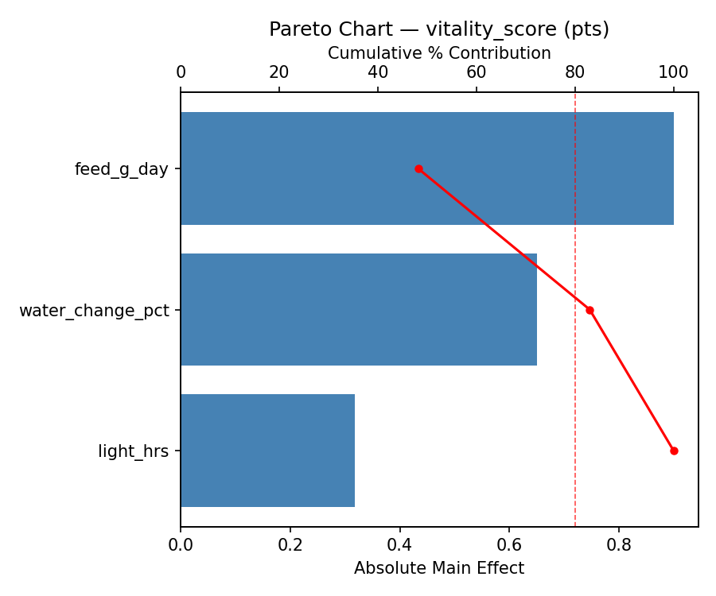
Main Effects Plot
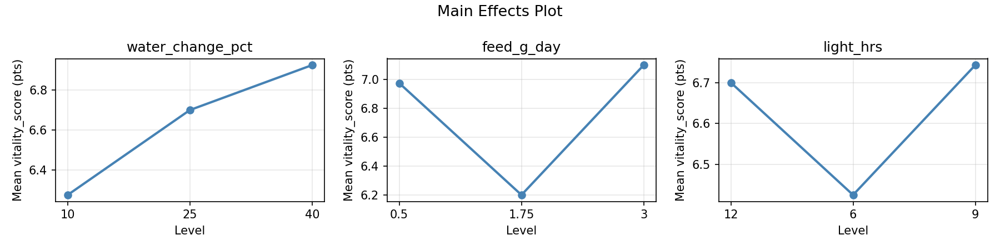
Normal Probability Plot of Effects
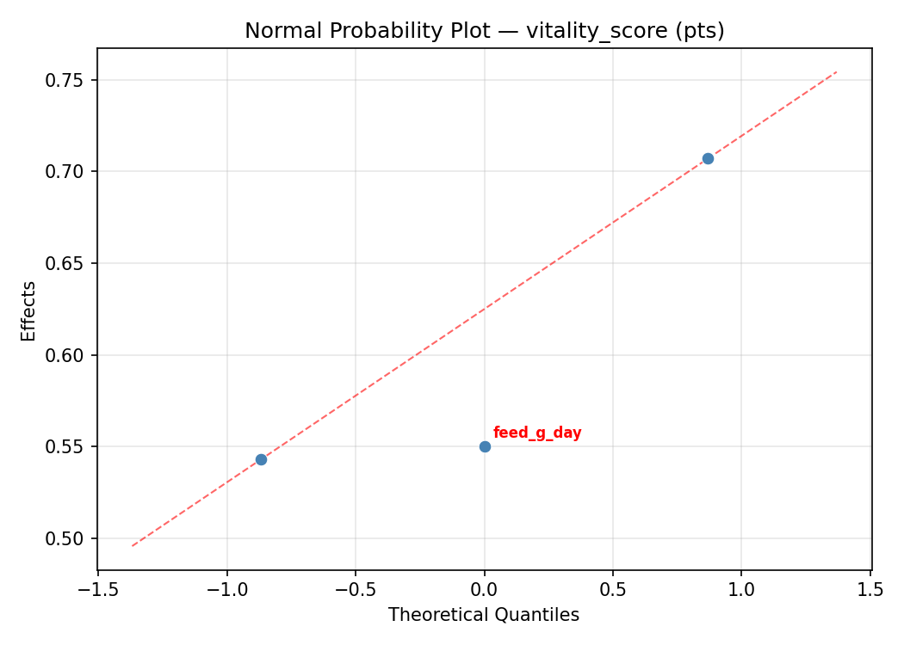
Half-Normal Plot of Effects
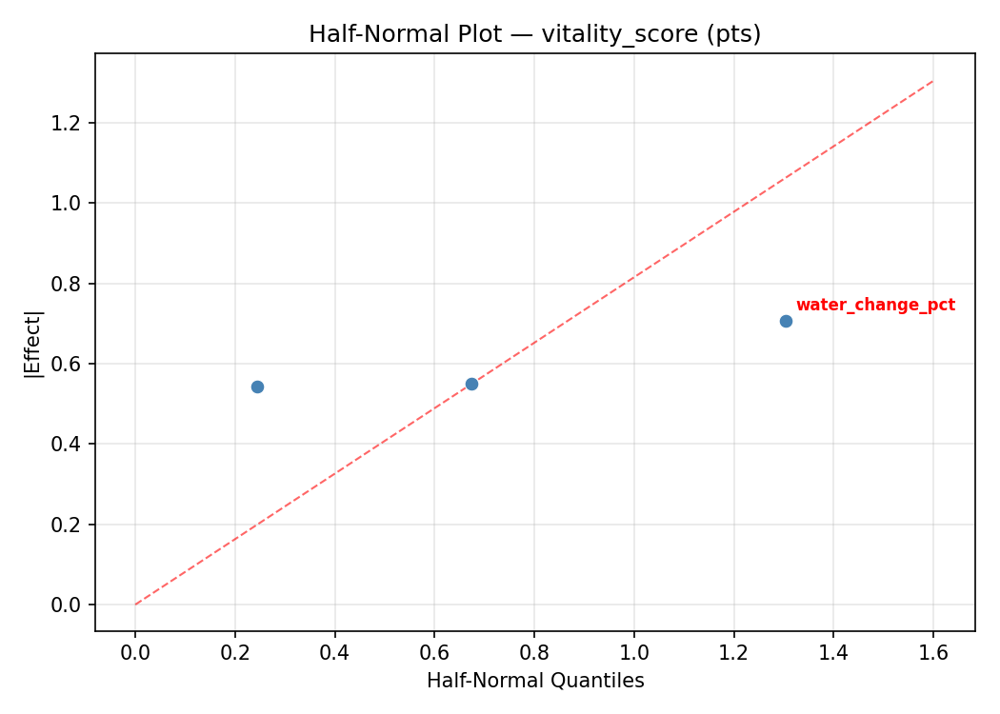
Model Diagnostics
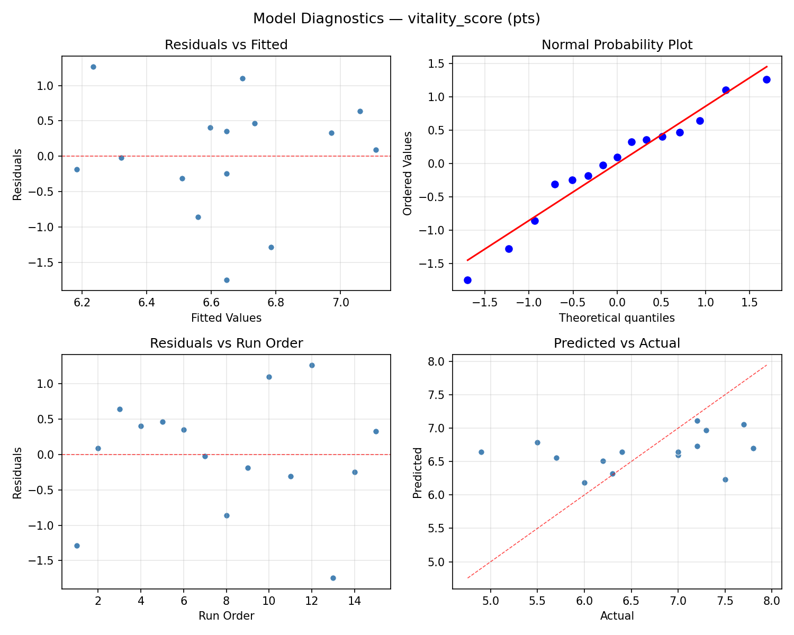
Response: algae_level
Top factors: feed_g_day (40.1%), water_change_pct (33.3%), light_hrs (26.6%).
ANOVA
| Source | DF | SS | MS | F | p-value |
|---|
| Source | DF | SS | MS | F | p-value |
| water_change_pct | 2 | 4.5098 | 2.2549 | 1.250 | 0.3369 |
| feed_g_day | 2 | 7.5012 | 3.7506 | 2.080 | 0.1874 |
| light_hrs | 2 | 4.1298 | 2.0649 | 1.145 | 0.3653 |
| Lack | of | Fit | 6 | 6.8260 | 1.1377 |
| Pure | Error | 2 | 3.6067 | | |
| Error | 8 | 10.4326 | 1.8033 | | |
| Total | 14 | 26.5733 | 1.8981 | | |
Pareto Chart
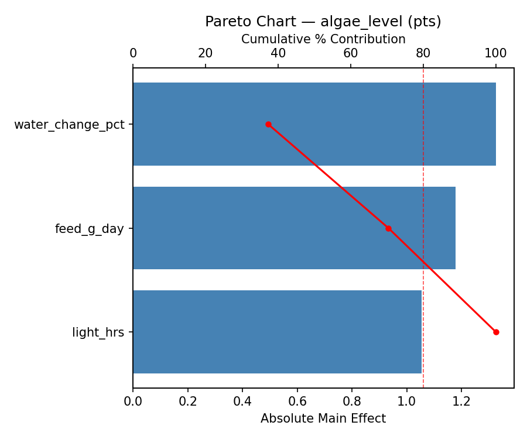
Main Effects Plot
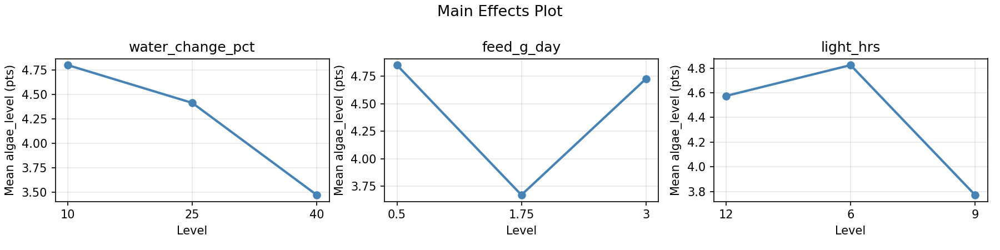
Normal Probability Plot of Effects
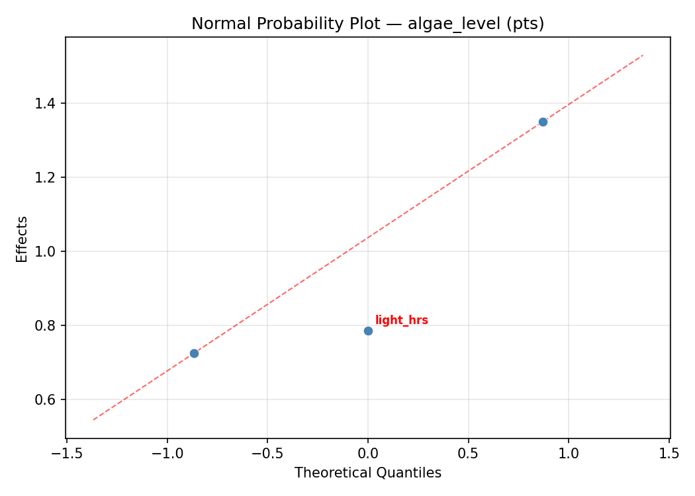
Half-Normal Plot of Effects
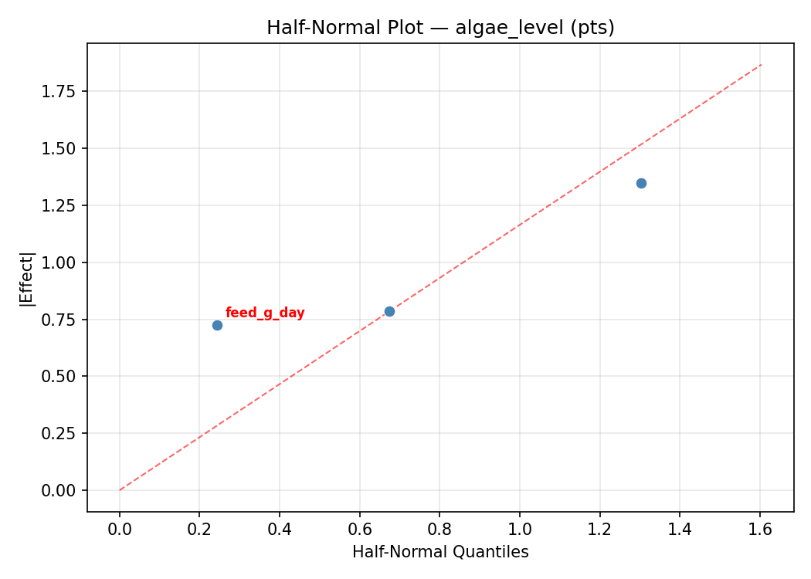
Model Diagnostics
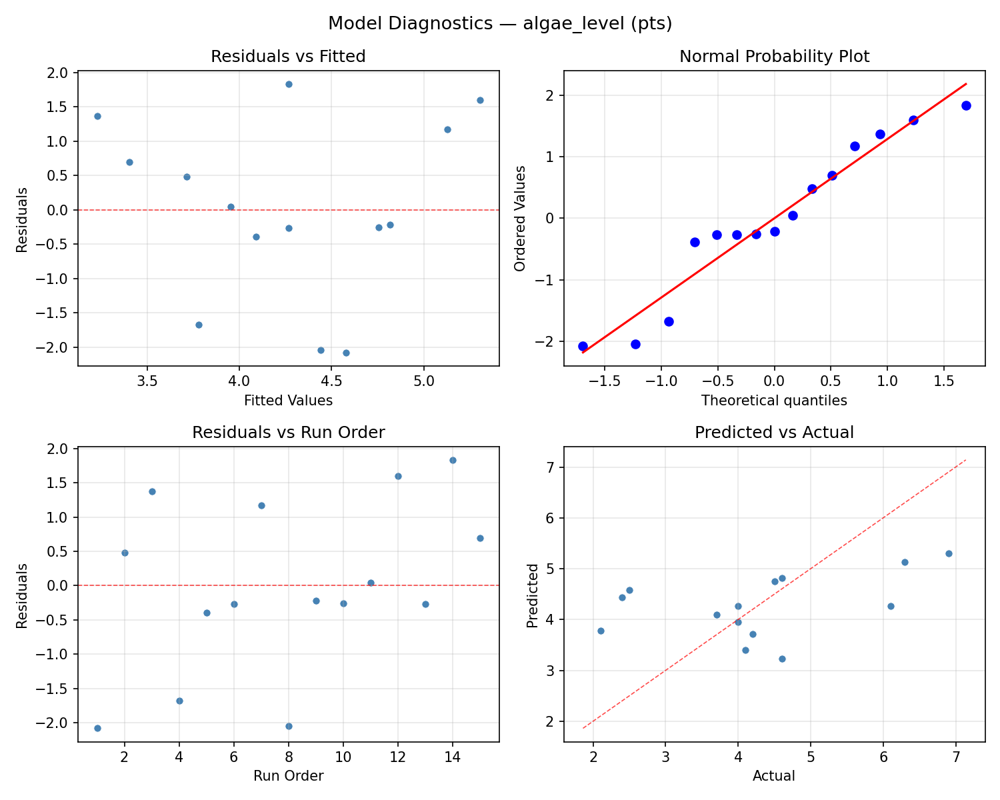
Response Surface Plots
3D surfaces fitted with quadratic RSM. Red dots are observed data points.
algae level feed g day vs light hrs
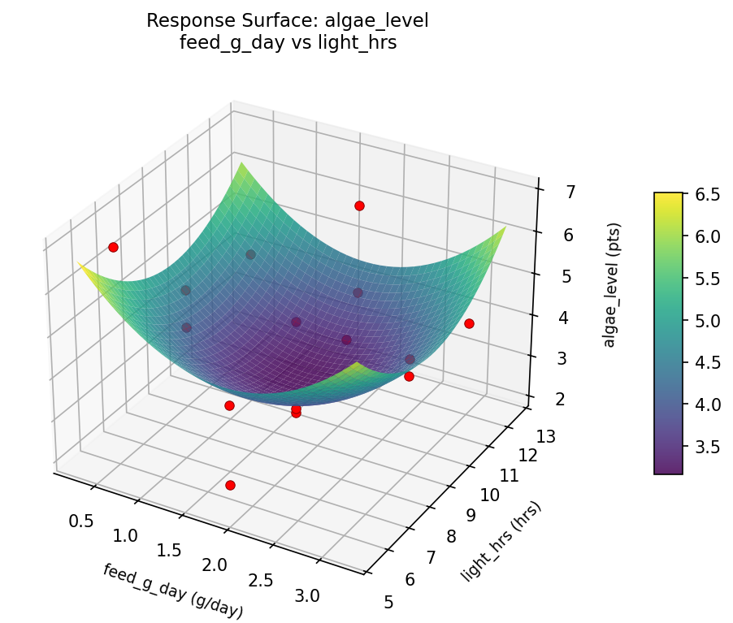
algae level water change pct vs feed g day
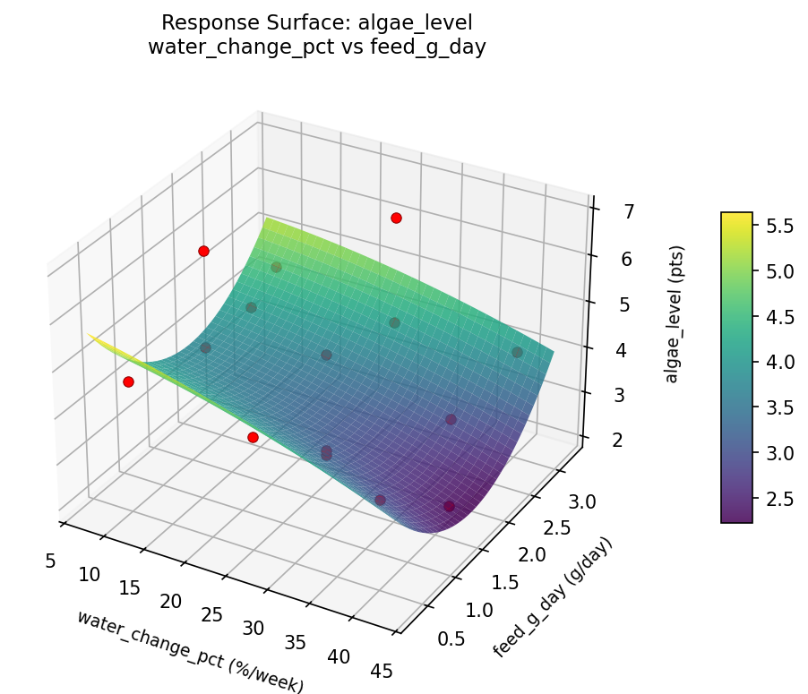
algae level water change pct vs light hrs
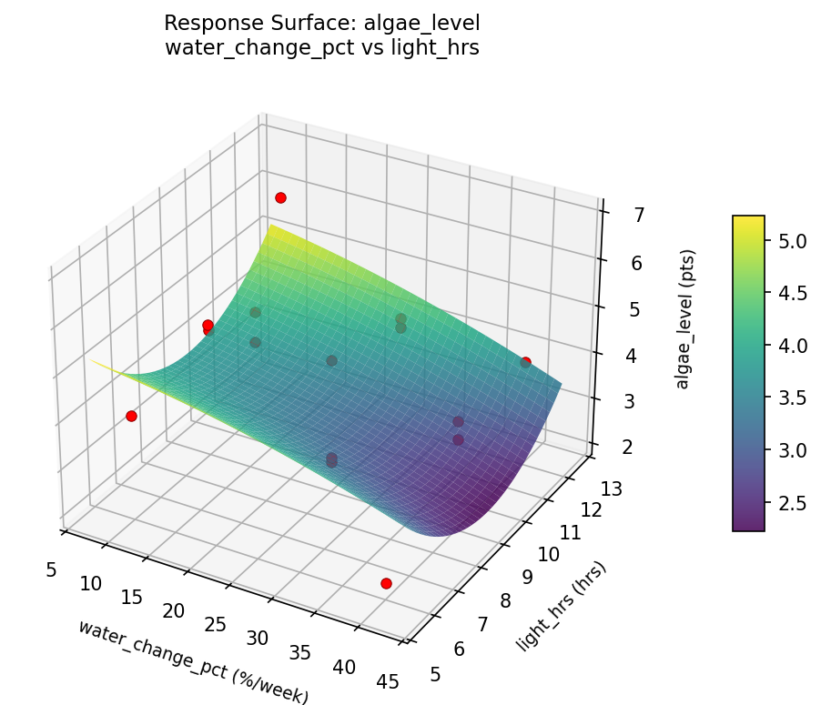
vitality score feed g day vs light hrs
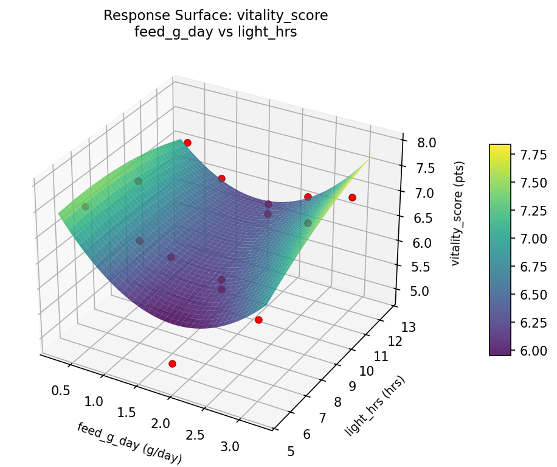
vitality score water change pct vs feed g day
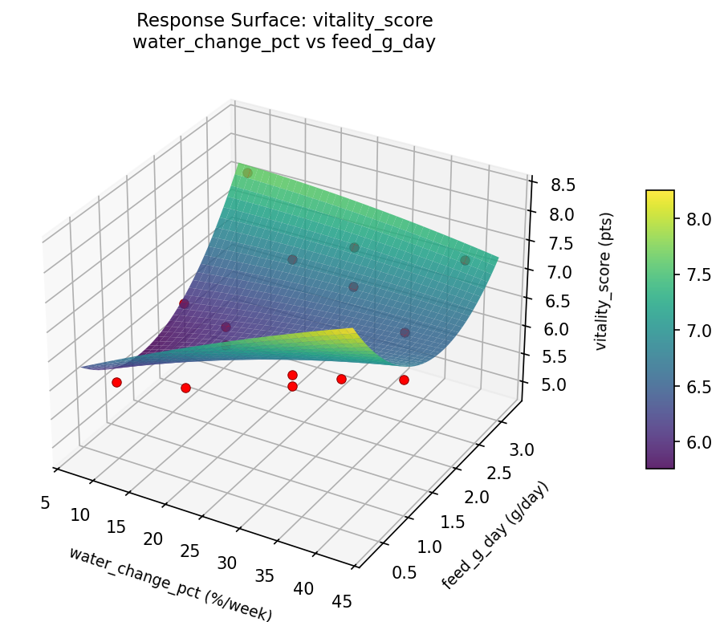
vitality score water change pct vs light hrs
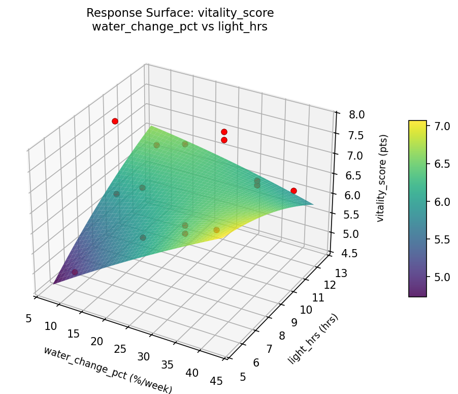
Multi-Objective Optimization
When responses compete, Derringer–Suich desirability finds the best compromise.
Each response is scaled to a 0–1 desirability, then combined via a weighted geometric mean.
Overall Desirability
D = 0.8196
Per-Response Desirability
| Response | Weight | Desirability | Predicted | Dir |
|---|
vitality_score |
1.5 |
|
7.00 0.7038 7.00 pts |
↑ |
algae_level |
1.5 |
|
2.10 0.9545 2.10 pts |
↓ |
Recommended Settings
| Factor | Value |
|---|
water_change_pct | 10 %/week |
feed_g_day | 1.75 g/day |
light_hrs | 12 hrs |
Source: from observed run #4
Trade-off Summary
Sacrifice = how much worse than single-objective best.
| Response | Predicted | Best Observed | Sacrifice |
|---|
algae_level | 2.10 | 2.10 | +0.00 |
Top 3 Runs by Desirability
| Run | D | Factor Settings |
|---|
| #5 | 0.7067 | water_change_pct=25, feed_g_day=1.75, light_hrs=9 |
| #10 | 0.6908 | water_change_pct=40, feed_g_day=1.75, light_hrs=12 |
Model Quality
| Response | R² | Type |
|---|
algae_level | 0.8794 | quadratic |
Full Multi-Objective Output
============================================================
MULTI-OBJECTIVE OPTIMIZATION
Method: Derringer-Suich Desirability Function
============================================================
Overall desirability: D = 0.8196
Response Weight Desirability Predicted Direction
---------------------------------------------------------------------
vitality_score 1.5 0.7038 7.00 pts ↑
algae_level 1.5 0.9545 2.10 pts ↓
Recommended settings:
water_change_pct = 10 %/week
feed_g_day = 1.75 g/day
light_hrs = 12 hrs
(from observed run #4)
Trade-off summary:
vitality_score: 7.00 (best observed: 7.80, sacrifice: +0.80)
algae_level: 2.10 (best observed: 2.10, sacrifice: +0.00)
Model quality:
vitality_score: R² = 0.6392 (quadratic)
algae_level: R² = 0.8794 (quadratic)
Top 3 observed runs by overall desirability:
1. Run #4 (D=0.8196): water_change_pct=10, feed_g_day=1.75, light_hrs=12
2. Run #5 (D=0.7067): water_change_pct=25, feed_g_day=1.75, light_hrs=9
3. Run #10 (D=0.6908): water_change_pct=40, feed_g_day=1.75, light_hrs=12
Full Analysis Output
=== Main Effects: vitality_score ===
Factor Effect Std Error % Contribution
--------------------------------------------------------------
light_hrs 1.0500 0.2238 69.5%
water_change_pct 0.3750 0.2238 24.8%
feed_g_day 0.0857 0.2238 5.7%
=== ANOVA Table: vitality_score ===
Source DF SS MS F p-value
-----------------------------------------------------------------------------
water_change_pct 2 0.4027 0.2013 0.345 0.7182
feed_g_day 2 0.0213 0.0106 0.018 0.9820
light_hrs 2 3.9273 1.9637 3.366 0.0869
Lack of Fit 6 4.9994 0.8332 1.428 0.4670
Pure Error 2 1.1667 0.5833
Error 8 6.1660 0.5833
Total 14 10.5173 0.7512
=== Summary Statistics: vitality_score ===
water_change_pct:
Level N Mean Std Min Max
------------------------------------------------------------
10 4 6.7500 0.4796 6.3000 7.3000
25 7 6.7429 0.8522 5.5000 7.8000
40 4 6.3750 1.2997 4.9000 7.7000
feed_g_day:
Level N Mean Std Min Max
------------------------------------------------------------
0.5 4 6.6250 1.3200 4.9000 7.8000
1.75 7 6.6857 0.7581 5.5000 7.7000
3 4 6.6000 0.7789 5.7000 7.3000
light_hrs:
Level N Mean Std Min Max
------------------------------------------------------------
12 4 7.1000 0.6683 6.2000 7.7000
6 4 7.1500 0.5745 6.4000 7.8000
9 7 6.1000 0.8426 4.9000 7.3000
=== Main Effects: algae_level ===
Factor Effect Std Error % Contribution
--------------------------------------------------------------
feed_g_day 1.7500 0.3557 40.1%
water_change_pct 1.4500 0.3557 33.3%
light_hrs 1.1607 0.3557 26.6%
=== ANOVA Table: algae_level ===
Source DF SS MS F p-value
-----------------------------------------------------------------------------
water_change_pct 2 4.5098 2.2549 1.250 0.3369
feed_g_day 2 7.5012 3.7506 2.080 0.1874
light_hrs 2 4.1298 2.0649 1.145 0.3653
Lack of Fit 6 6.8260 1.1377 0.631 0.7199
Pure Error 2 3.6067 1.8033
Error 8 10.4326 1.8033
Total 14 26.5733 1.8981
=== Summary Statistics: algae_level ===
water_change_pct:
Level N Mean Std Min Max
------------------------------------------------------------
10 4 5.1250 1.2447 4.0000 6.3000
25 7 4.1143 1.5721 2.1000 6.9000
40 4 3.6750 0.9287 2.4000 4.6000
feed_g_day:
Level N Mean Std Min Max
------------------------------------------------------------
0.5 4 5.4250 1.3937 4.0000 6.9000
1.75 7 3.9429 1.3575 2.1000 6.1000
3 4 3.6750 0.8539 2.4000 4.2000
light_hrs:
Level N Mean Std Min Max
------------------------------------------------------------
12 4 4.8750 1.3793 4.0000 6.9000
6 4 4.6250 1.0372 3.7000 6.1000
9 7 3.7143 1.5005 2.1000 6.3000
Optimization Recommendations
=== Optimization: vitality_score ===
Direction: maximize
Best observed run: #10
water_change_pct = 40
feed_g_day = 1.75
light_hrs = 12
Value: 7.8
RSM Model (linear, R² = 0.0368, Adj R² = -0.2258):
Coefficients:
intercept +6.6467
water_change_pct -0.1125
feed_g_day -0.1875
light_hrs +0.0250
RSM Model (quadratic, R² = 0.4369, Adj R² = -0.5767):
Coefficients:
intercept +6.3000
water_change_pct -0.1125
feed_g_day -0.1875
light_hrs +0.0250
water_change_pct*feed_g_day +0.0500
water_change_pct*light_hrs -0.2250
feed_g_day*light_hrs +0.4250
water_change_pct^2 -0.0750
feed_g_day^2 -0.1750
light_hrs^2 +0.9000
Curvature analysis:
light_hrs coef=+0.9000 convex (has a minimum)
feed_g_day coef=-0.1750 concave (has a maximum)
water_change_pct coef=-0.0750 negligible curvature
Notable interactions:
feed_g_day*light_hrs coef=+0.4250 (synergistic)
Predicted optimum (from linear model, at observed points):
water_change_pct = 10
feed_g_day = 0.5
light_hrs = 9
Predicted value: 6.9467
Surface optimum (via L-BFGS-B, linear model):
water_change_pct = 10
feed_g_day = 0.5
light_hrs = 12
Predicted value: 6.9717
Model quality: Weak fit — consider adding center points or using a different design.
Factor importance:
1. light_hrs (effect: 0.9, contribution: 58.8%)
2. feed_g_day (effect: 0.4, contribution: 26.3%)
3. water_change_pct (effect: 0.2, contribution: 14.9%)
=== Optimization: algae_level ===
Direction: minimize
Best observed run: #4
water_change_pct = 25
feed_g_day = 1.75
light_hrs = 9
Value: 2.1
RSM Model (linear, R² = 0.1226, Adj R² = -0.1167):
Coefficients:
intercept +4.2667
water_change_pct -0.1125
feed_g_day +0.4250
light_hrs -0.4625
RSM Model (quadratic, R² = 0.2751, Adj R² = -1.0298):
Coefficients:
intercept +3.5667
water_change_pct -0.1125
feed_g_day +0.4250
light_hrs -0.4625
water_change_pct*feed_g_day -0.1500
water_change_pct*light_hrs -0.3750
feed_g_day*light_hrs +0.2000
water_change_pct^2 +0.6792
feed_g_day^2 -0.0458
light_hrs^2 +0.6792
Curvature analysis:
light_hrs coef=+0.6792 convex (has a minimum)
water_change_pct coef=+0.6792 convex (has a minimum)
feed_g_day coef=-0.0458 negligible curvature
Notable interactions:
water_change_pct*light_hrs coef=-0.3750 (antagonistic)
Predicted optimum (from linear model, at observed points):
water_change_pct = 25
feed_g_day = 3
light_hrs = 6
Predicted value: 5.1542
Surface optimum (via L-BFGS-B, linear model):
water_change_pct = 40
feed_g_day = 0.5
light_hrs = 12
Predicted value: 3.2667
Model quality: Weak fit — consider adding center points or using a different design.
Factor importance:
1. light_hrs (effect: 1.1, contribution: 40.7%)
2. feed_g_day (effect: 0.9, contribution: 31.6%)
3. water_change_pct (effect: 0.7, contribution: 27.7%)